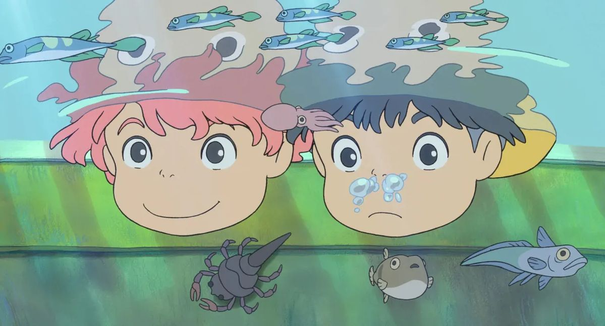

Cami's Corner
Welcome to Cami's Corner of the internet! Sit back and relax while you explore the different content sitting across this website
Featured Posts
Here's what's been on my mind lately...
- Post 1
- Post 2
- Post 3
Photo of the Week

Current Media Digest
- Drag Race Season 17
- American Love Call by Durand Jones & The Indications
- Taxi Driver directed by Jang Hoon